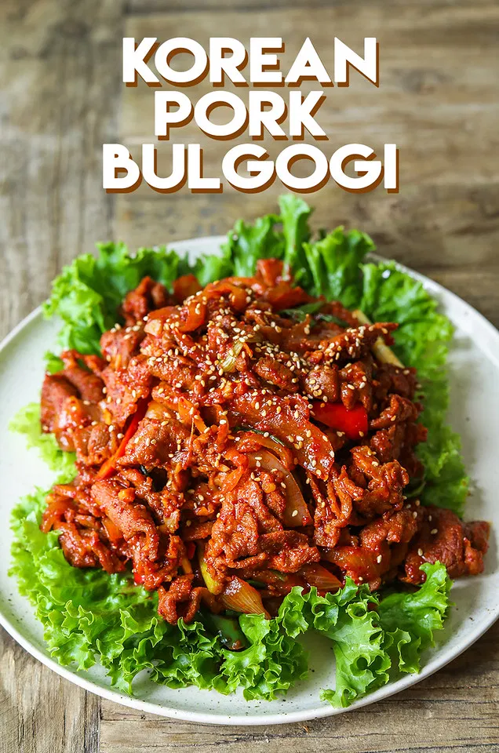

Bulgogi!

What is Korean Pork Bulgogi?
The dish originated from northern areas of the Korean Peninsula, but is a very popular dish in South Korea, where it can be found anywhere from upscale restaurants to local supermarkets as pan-ready kits.
Ingredients!
- 4 tbsp gochugaru, Korean red pepper flakes or regular red pepper flakes
- 2 tbsp mirin
- 3 tbsp soy sauce
- 1.5 tbsp fish sauce
- 2 tbsp maesilaek, Korean plum extract or apricot jam>
- 2 tbsp sugar
- 1/4 tsp black pepper
- 10 tbsp garlic, chopped
- 1 1/2 lb pork butt, shoulder or belly, thinly sliced
- 1 large onion, sliced
- 1 tbsp cooking oil
- 4 green onions, cut into 2-inch long pieces
- 1 red or green chili, optional
- sesame seeds
- sesame oil
Preparation!
- Combine gochugaru, mirin, fish sauce, soy sauce, maesiaek, sugar, black pepper and garlic in a large mixing bowl and let it sit for 5 minutes. Gochugaru will absorb the moisture from the sauces and will become thick pasty sauce.
- Add pork and onion, mix well with your hand. Let it marinade at least 30 minutes to over night. Thicker the meat, longer marinate time.
- Heat a large skillet over high heat, add cooking oil.
- Add marinated pork and cook until pork is fully cooked and onions are soften about7 to 9 minutes.
- Now, stir in green onions and chili. Cook additional 1 more minute and remove from heat. Transfer to a serving plate and garnish with sesame seeds and tiny bit of sesame oil. Serve with warm cooked rice, some lettuce for lettuce wrap and other Korean side dishes! I recommend kimchi, soy bean sprouts side dish and spinach side dish! Enjoy!